MARLIN: Mixed-Precision Auto-Regressive Parallel Inference on Large Language Models
PPoPP 2025
llm
inference
quantization
gpu
MARLIN is a mixed-precision GPU kernel that enables near-optimal 4-bit quantized LLM inference speedups for batched workloads.
Background & Motivation
LLM Generative Inference
- Large Language Models (LLMs) excel at generative tasks, predicting the next token based on a cached context.
- Generative inference is heavily memory-bound on modern GPUs.
- The time required to read LLM weights from memory completely dwarfs the time spent on arithmetic operations.
Weight Quantization
- Compressing network weights (e.g., from 16-bit floats to 4-bit integers) reduces memory movement.
- Weights are loaded from GPU memory in a quantized format and dynamically decompressed in registers before multiplication.
- This mixed-precision approach yields substantial speedups for single-user (batch size 1) inference.
The Batched Inference Challenge
- Existing mixed-precision implementations lose their speedup in batched inference (generating multiple tokens in parallel).
- Batched scenarios have significantly higher arithmetic intensity, making it harder to hide computations behind reduced memory movement.
- However, modern GPUs (like NVIDIA Ampere) have massive FLOP-to-byte ratios (100-200 for FP16).
- Theoretically, reducing weight precision to 4 bits should still yield near-optimal 4× speedups for batch sizes up to 16-32.
Ampere GPU Architecture
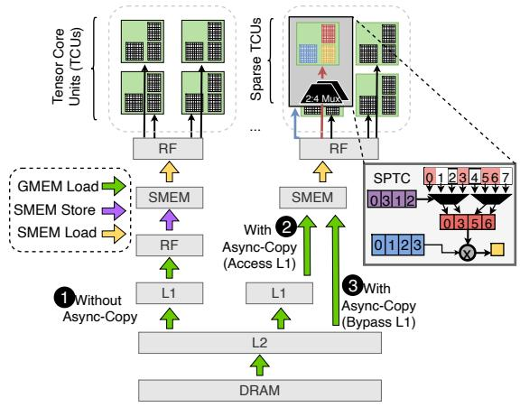
- Tensor Core Units (TCUs) deliver up to 16× more performance on FP16 than standard CUDA cores.
- Ampere introduces Sparse TCUs to handle 2:4 structured sparsity, doubling throughput.
- Ampere also introduces asynchronous copy instructions, allowing data to be loaded directly from global memory to shared memory, bypassing intermediate registers.
Mixed-Precision Challenges
- Parallelization must be carefully configured so that loading quantized weights remains the bottleneck, not reloading full-precision activations.
- The cost of matrix multiplication computations at medium batch sizes approaches memory loading costs, requiring extreme overlapping.
- Partitioning constraints limit parallelization options, making it difficult to fully utilize all Streaming Multiprocessors (SMs).
Design
MARLIN Overview
- MARLIN (Mixed-precision Auto-Regressive LINear) is a highly optimized GPU kernel for batched LLM inference.
- It targets matrix multiplications where activations are in FP16 and weights are symmetrically quantized to INT4.
- Combines asynchronous memory access, complex task scheduling, pipelining, and bespoke quantization support.
Maximizing Loading Bandwidth
- Utilizes the widest possible memory loads (128 bits = 16 bytes per thread).
- Weights are preprocessed offline and reshuffled into contiguous memory layouts to ensure optimal cache-line reads.
- Uses the
evict_firstcache hint to prevent single-use weights from polluting the L2 cache and evicting reusable activation data.
Memory Load Pipelining
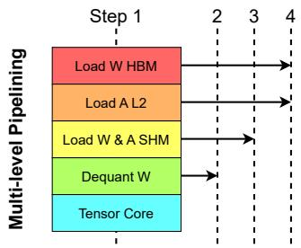
- Fully overlaps memory loading and Tensor Core math using asynchronous copies (
cp.async). - Employs a pipeline depth of 4 to completely hide latency while fitting within shared memory limits.
- The even pipeline depth allows for smooth loop unrolling, making all shared memory addressing completely static and avoiding slow dynamic index calculations.
Efficient Dequantization
- Avoids slow, naive type-casts from INT4 to FP16.
- Uses optimized bitwise manipulations (AND, OR, subtraction) to dequantize two INT4 values simultaneously within a single 32-bit register.
- Weights are stored interleaved (e.g., 64207531) to power parallel decoding directly into the layout required by Tensor Cores.
Striped Partitioning
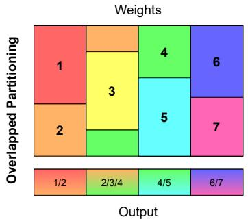
- Standard partitioning across the output dimension often leaves SMs underutilized for real-world matrix shapes (wave quantization).
- MARLIN uses a “striped” partitioning scheme where tiles are assigned column-wise, allowing stripes to span across multiple columns.
- Ensures a uniform distribution of work across all SMs while minimizing the overhead of global reduction steps.
Sparse-MARLIN Extension
- Integrates 2:4 structured sparsity on top of 4-bit quantization to further improve FLOPS/Byte ratios.
- Reformulates the matrix multiplication \(A \times B\) as \((B^T A^T)^T\) to satisfy the hardware constraints of Sparse Tensor Cores (which require the sparse matrix to be the left-hand operand).
- Transposes the activation matrix on-the-fly in shared memory without performance degradation.
Sparse Data Layouts
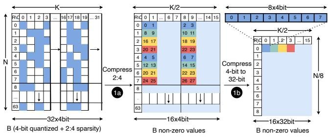
- Compresses 8 non-zero 4-bit elements into a single 32-bit value for maximum memory efficiency.
- Reshuffles 2-bit encoded metadata indices offline to ensure conflict-free 128-bit loads from global memory.
Evaluation
Kernel Peak Performance

- Evaluated on an NVIDIA A10 GPU using a large \(72k \times 18k\) matrix to test peak capabilities.
- MARLIN delivers near-ideal ~3.9× speedups for batch sizes up to 16-32.
- Significantly outperforms existing kernels (PyTorch, AWQ, ExLlamaV2, bitsandbytes), which rapidly degrade as batch size increases beyond 1.
Performance on Real Layer Shapes
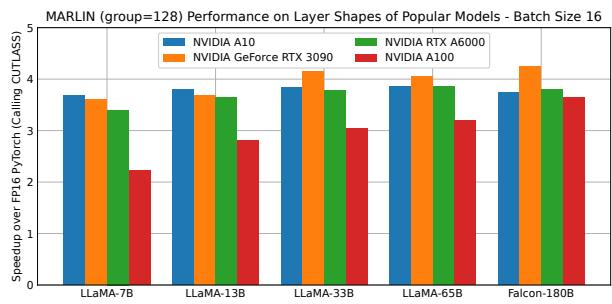
- Maintains strong performance across actual linear layer shapes from LLaMA and Falcon models.
- Commodity GPUs (like the RTX 3090) show higher relative speedups than flagship GPUs (like the A100), as the latter’s massive bandwidth makes pipeline overheads relatively larger for small matrices.
Sustained Performance & Large Inputs
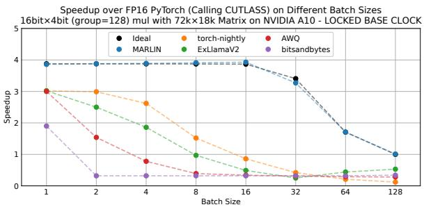
- Under locked base GPU clocks (sustained workloads), MARLIN maintains virtually optimal performance, whereas prior kernels suffer.
- For large prefill inputs (batch sizes up to 1024), MARLIN performs nearly identically to an uncompressed compute-bound matrix multiplication.
Roofline Analysis
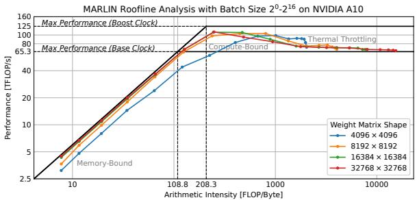
- Confirms that batch sizes smaller than 64 are memory-bound, while larger batch sizes transition to compute-bound.
- MARLIN achieves strong hardware utilization across all matrix sizes and arithmetic intensities.
Ablation Study
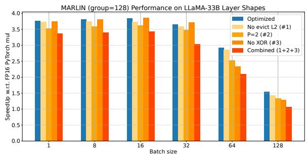
- Removing L2 cache hints, reducing pipeline depth, or disabling XOR conflict resolution degrades performance.
- Neglecting these optimizations combined drops performance by up to 1×, particularly in the compute-bound regime.
Sparse-MARLIN Peak Performance
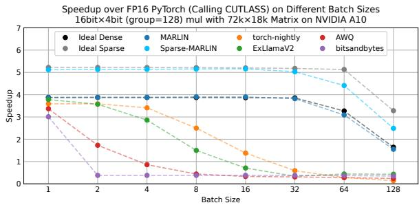
- Sparse-MARLIN provides additional speedups over the dense MARLIN variant, reaching up to ~5.2× speedup at low batch sizes.
- Validates the extensibility of the MARLIN kernel design to other advanced compression formats.
End-to-End vLLM Integration
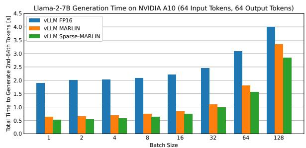
- Integrated into the vLLM serving engine and tested with Llama-2-7B on an NVIDIA A10.
- MARLIN achieves up to a 3× speedup in generation time compared to the FP16 baseline.
- Sparse-MARLIN provides an additional 1.2× end-to-end speedup on top of dense MARLIN.
Serving Benchmark (TPOT)
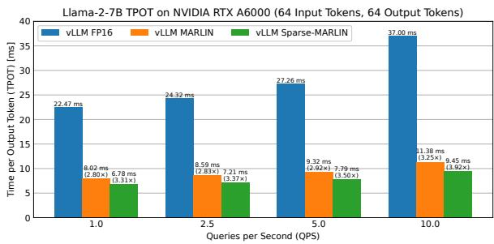
- Evaluated in a simulated server-client setting measuring Time Per Output Token (TPOT).
- MARLIN reduces latency by ~2.8× across various querying intensities (Queries Per Second).
- Sparse-MARLIN reduces latency by ~3.3×, proving highly effective for practical, high-throughput LLM serving.